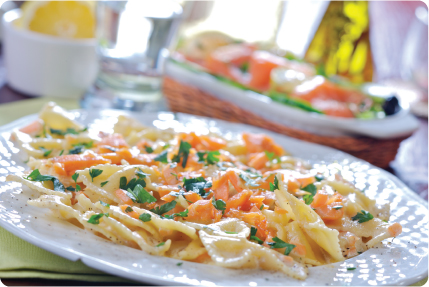

Salmon Farfalle w/Creamy Vodka Sauce
Ingredients
1 pound farfalle
2 tablespoons unsalted butter
1 small shallot, minced
1/4 cup vodka
2 1/4 cups heavy cream
4 ounces thinly sliced smoked salmon, cut into thin strips
Salt and freshly ground pepper
3 large egg yolks
2 tablespoons minced chives
1/2 teaspoon Tailai USA Orange & Lemon Pepper
1/2 teaspoon Tailai USA Sea Salt
Instructions
In a large pot of boiling salted water, cook the farfalle, stirring occasionally, until al dente.
Meanwhile, in a large, deep skillet, melt the butter. Add the shallot and cook over moderate heat until golden, about 3 minutes. Add the vodka and cook until evaporated, about 1 minute. Add 2 cups of the heavy cream and simmer over moderately high heat, stirring often, until reduced by half, about 4 minutes. Stir in the smoked salmon, season with salt and pepper and remove from the heat. In a small bowl, beat the eggs yolks with the remaining 1/4 cup of heavy cream.
Drain the farfalle. Add it to the skillet and stir well. Add the egg-yolk mixture and stir over low heat until warmed through
and the sauce is creamy, about 30 seconds. Season with salt and pepper. Transfer the pasta to bowls, scatter the chives on top
and serve. Makes 6 servings.